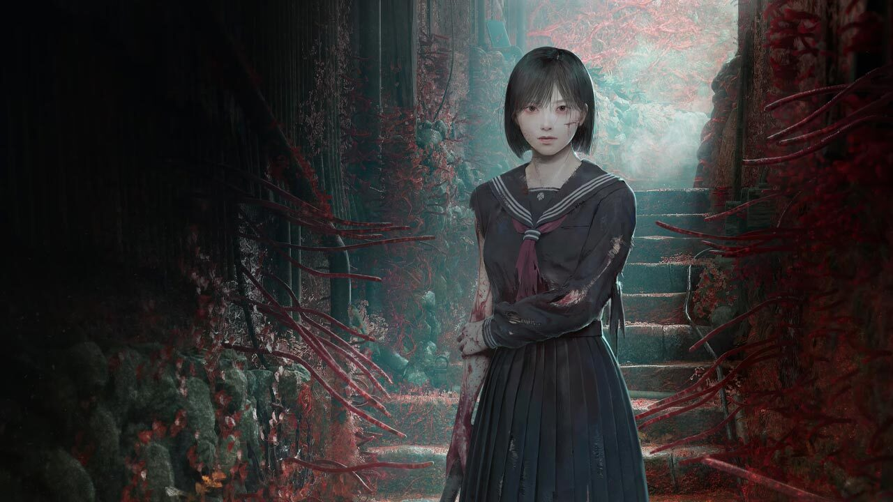
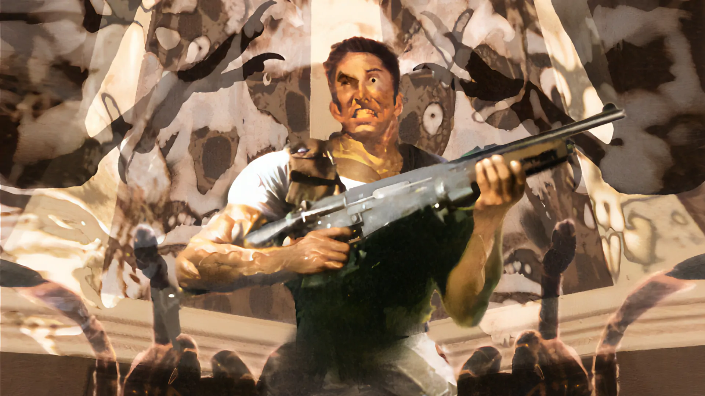
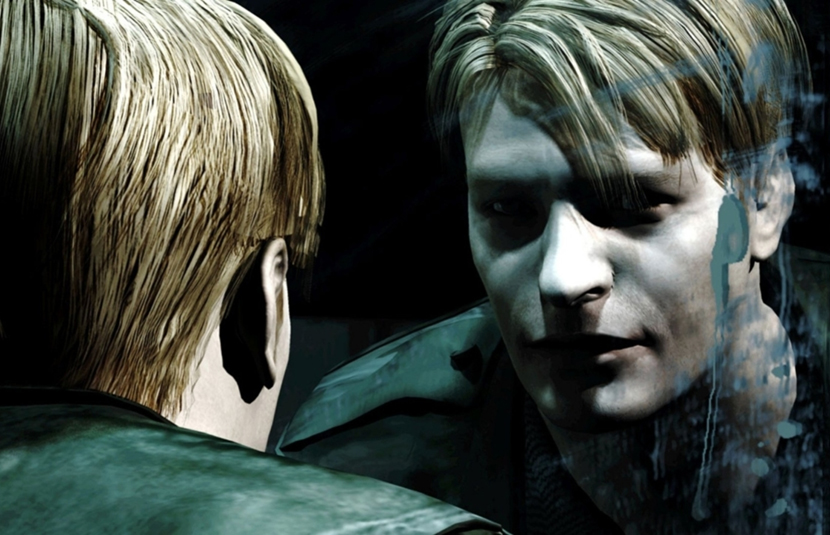

Horror game culture is built on tension, vulnerability, and the unknown. Emerging from early experimental titles and evolving through defining works like Resident Evil and the psychological depth of Silent Hill 2, the genre has transformed into something more than entertainment. It is an experience designed to unsettle, to challenge control, and to immerse players in fear.

Unlike most games, horror does not prioritize power or victory. Instead, it places players in situations where they are limited, exposed, and uncertain. Resources are scarce, environments are oppressive, and progress often requires moving forward despite hesitation. The player is not meant to feel safe—they are meant to feel aware, cautious, and constantly on edge. Every decision carries weight, and every step forward is a choice to confront what may be waiting.
This subculture is defined by its ability to provoke emotion beyond simple fear. It creates dread, unease, and anticipation, but also curiosity. Players are drawn into spaces that feel unstable or unfamiliar, encouraged to question what they see and interpret what is not fully explained. Meaning is often hidden, fragmented, or symbolic, leaving room for personal understanding. In this way, horror games become something to analyze as much as they are something to play.

Over time, the genre has continued to evolve, shifting from technical limitation to intentional design, from external threats to internal psychological experiences. Yet its core remains the same: a focus on immersion, atmosphere, and the loss of control. Horror games do not simply present fear—they require participation in it.
This is not just a genre. It is a space defined by discomfort, tension, and interpretation. It is something to be entered carefully, experienced fully, and never entirely understood.